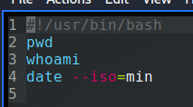
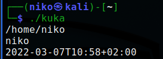
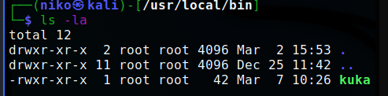
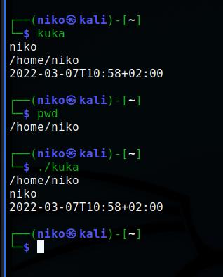

Uusi komento
Tehtävänä oli luoda uusi komento Linuxiin joka tulostaa hyödyllistä tietoa
Tein komennon "kuka", joka tulostaa sijainnin, käyttäjän ja päivämäärän, sekä kellonajan.
Loin tiedoston "kuka" microlla - micro kuka. Tiedoston sisään kirjoitin haluamani komennot ja lisäsin tiedoston alkuun #!/usr/bin/bash
Testasin toimiiko kuka -komento.
Jotta komento toimisi muillakin käyttäjillä kuin omallani tuli tiedoston oikeuksia muuttaa niin että muutkin saavat execute oikeudet - chmod ugo+x kuka (change mod, user group other, x= execute [tiedoston nimi]). Lisäksi tiedosto tuli kopioida /usr/local/bin/ kansioon - cp kuka /usr/local/bin/
Omaan silmään näytti pahalta tulostaa ensin sijainti ja sitten käyttäjä, joten kävin vielä muuttamassa /usr/local/bin/kuka niin, että käyttäjä tulostuu ensimmäiseksi. Jos olisin muuttanut /home/niko/kuka tiedostoa olisi muutos ollut vain käyttäjä kohtainen.
